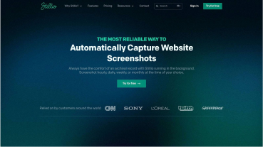
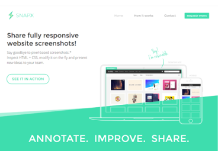

A record of what I create, practise, and accomplish.
Featured Projects
Project 1: My First Web Page

Figure 1: Screenshot of my first static HTML web page.
My first attempt at building a web page with HTML. This project
helped me understand how HTML structures headings, paragraphs,
links, and images.
What I learned:
Creating a basic HTML document structure
Using headings and text formatting paragraphs
Adding hyperlinks and displaying images
Project 2: Personal Website

Figure 2: Screenshot of the multi-page personal website project.
A multi-page website documenting my learning and development. This
website brings together my background, skills, projects, interests,
and contact information.
Website Structure (Nested Outline):
Personal Information
Biography & Background
Education & Values
My Work
Projects Showcase
Achievements & Certificates
Achievements
Learning Achievement: Successfully completed my
first multi-page HTML project.
Academic Achievement: Completed foundational
computer literacy coursework with high marks.
Personal Achievement: Built a self-directed study
habit for learning technology skills.
Project Files
Visitors can use the link below to download a sample project document
report: